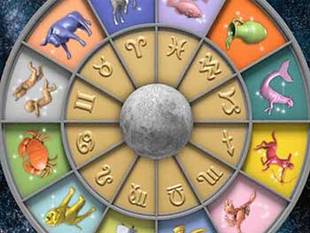

Si querés saber cómo viene tu relación con tu chico y cómo le irá a él en el próximo mes, no te pierdas esta nota
Por Ana Bilsky
Aries
Entrar en la cima de la exposición no es fácil para nadie. Tu ariano se encuentra ahora en ese punto. Tendrá el plato lleno de energía, salpicado de éxitos y de impostergables compromisos. La movida planetaria de este mes lo va a marear de tanto bamboleo. Con vos, también revuelos... ¡Un poco de agua y de paz para tanto fuego!
Tauro
Tiempo de cosecha laboral y de ascenso. Va a jugar más su autoridad en su trabajo. Pero ¡ojo!, es necesario que esté atento en relaciones con quienes comparta negocios. Hasta el 14, algo se puede empantanar en cuestiones de dinero con otros. Con vos, aclaraciones necesarias que traen acercamiento y más amor.
Géminis
Todo va a tener que pasar por lo "emocionalmente agradable". Incluso el trabajo. Ya sabemos que su mente es un vagón de argumentos inteligentes y agudos, pero a tu amor de Géminis le van a empezar a pasar otras cosas que lo pueden confundir y sorprender. Bienvenido al mundo de la sensibilidad. ¡Vos, chocha!
Cáncer
Buena actitud, buen ánimo. Júpiter lo va a estar acompañando mucho tiempo para todo lo que significa trabajo y afecto. Su confianza y la autovaloración van a salir del rincón en que las tenía escondidas. Con vos, ¡proyectos a futuro para un gran viaje! Entonces: disfrutar y no pedirle peras al olmo.
Leo
Tu León está con Saturno obligándolo a ser disciplinado y a bajar un poco el tamaño de su ego y de su gran melena. Si escucha la señal, todos los esfuerzos que haga no serán en vano. Saturno trae recompensas a la energía invertida. Con el exceso, en cambio, solo vienen límites y hasta algún lío de salud... Cuidado para él.
Virgo
Algunos proyectos de alto vuelo van a estar en la agenda de tu amor de Virgo todo este mes. Va a haber gente que lo apoya, ofertas que lo van a hacer sentirse orgulloso de sí mismo, metas económicas que se concretan. En fin, todo más que bien. Hay para festejar, amiga, no pierdan el tiempo en discusiones pavas.
Libra
Decile a tu amor de Libra que ponga en remojo un poco su cabeza, ya que la tiene llena de murmullos. A partir del 14, más tranquilidad en su mente y una energía más abierta a los encuentros de amor con vos. En su trabajo, el mejor momento, a partir del 19. La familia de origen lo requiere, tiene que visitarla más.
Escorpio
Decisión y acción hacia objetivos pautados; valoran su estrategia como siempre, pero también su creatividad y su voluntad de trabajo. Se concreta una operación financiera que le va a dar acceso a otra plataforma económica. Además, sus amigos de la infancia le proponen "viaje de egresados"... ¡No podés decir que no!
Sagitario
La fantasía y la realidad se conjugan y se ponen en acción para transformar la realidad laboral de tu amor sagitariano. Para él, buen momento para hacer transacciones económicas con otros, sobre todo con extranjeros. Podrían hacer un viaje soñado. Tengan los papeles necesarios al día. Ojo con su alimentación.
Capricornio
Todo va a requerir mucha energía. La recomendación es que descanse cuando esté cansado. Si el depósito de nafta está vacío, lo único que se puede hacer es recargarlo. Excelente mes laboral, mucha tarea en su hogar, y así, tan terrenal como es tu amor, va a tener acceso al mundo invisible ¡como ningún otro signo!
Acuario
Tu amor va a tener que zanjar diferencias, en todo y con todos. Los opuestos se agudizan para tu gran creativo. Confrontaciones con amigos y en relaciones de trabajo y hasta algún que otro revuelo con vos, nada para darle demasiada importancia. Su Marte va a estar saltando como loco. No te enganches.
Piscis
El bien le va a llegar naturalmente por ley kármica. Así que tu amor tiene que dejarse fluir con lo que el universo le vaya trayendo. Hay muy buena energía para él y de la mejor calidad. Éxitos en el trabajo, economía en crecimiento y, con vos, sorpresas y proyectos jugados para la relación, ¡Upa!, ¿qué será?
Copyright 2012 CRONOS SA - Todos los derechos reservados
Sitio realizado por Fátima Jimena Corbo